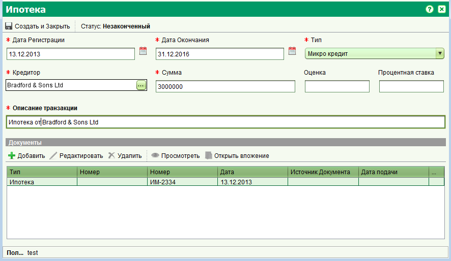

Вы можете зарегистрировать ипотеку используя услугу "Регистрация ипотеки" или "Новое право собственности (конвертация)". Откройте заявление назначенное вам, перейдите на вкладку "Услуги", выберите услугу по регистрации ипотеки и нажмите кнопку "Старт". На появившейся форме недвижимости, перейдите на вкладку "Права/Ограничения", выберите тип права "Ипотека" (оно может быть уже выбрано автоматически) и нажмите кнопку "Создать". В результате этого будет открыта форма регистрации ипотеки.
Введите данные ипотеки и нажмите кнопку "Создать и Закрыть". Форма недвижимости отобразит созданное право со статусом "На исполнении". Нажмите кнопку "Сохранить" на форме недвижимости. Для завершения действий по регистрации ипотеки, выберите услугу регистрации ипотеки и нажмите кнопку "Завершить", после чего одобрите заявление.
Смотрите также: